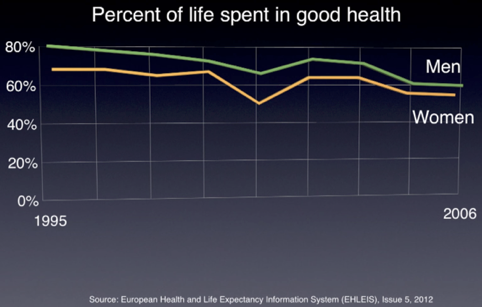

The Longevity Diet
A few years ago I got interested in the diet science. I am in my 20s and I’ve never been fat or not healthy, but still I thought that maybe there was ways of anticipating my aging with a better diet. I read a few books and one made lots of sense to me, which I tried to summarize in the following article. It is a book written by Valter Longo about a mimicking fasting diet. The idea is to have the full benefits of a water fasting diet, while still eating specific vegetables that would not prevent the body from getting into starvation mode.
Full disclaimer
I must say that this book, even if it seems to be baked by science, is still a book. All the evidence that Valter Longo shows needs to be replicated and explored more deeply before this can be called a truth. I decided to try it because fasting is not a very dangerous experimentation, but I would recommend anybody reading that article to be cautious and not to take everything said here for absolute truth. Don’t do anything stupid if you are not feeling healthy and talk with your doctor before.
What do my body gets from food
There are mainly three things that are being consumed when we eat.
- Protein - used by the body to generate new proteins, muscles.
- Carbohydrates - simple form (sugars in fruit juices, candy, etc..) or their complex form (large chains of glucose contained in vegetables). Simple sugar can enter circulation immediately, increase blood glucose levels and trigger the rapid release of insulin by the pancreas. The complex form must be separated from other components in food and broken down into simple sugars before they can be absorbed by the body.
- Fats - major source of stored energy in the body.
The vitamins and minerals are the other family of things that the body needs from the food.
Some common accepted ideas about diet
A diet rich in vegetables, fish, nuts and whole grains is the ideal way to get the essential nutrients, except maybe for the vitamin D, and for vegans and the elderly, the vitamin B12.
Healthy diet : More vegetables, fewer fruits, no dairy (milk, etc), healthy proteins, whole grains, healthy oils and stay active. But eat less.
Saying breakfast is the most important meal in the day is advertising, not science, so you better skip eat and only eat twice a day.
If you want to stay satiated and full of energy, rather than be hungry and lethargic, you need to keep your insulin low, and fasting seems to be a good way to quickly lower insulin levels.
Mimicking Fasting Diet
Link to Valter Longo video speech at TEDx
1) Fasting and cancer
Cancer is the second cause of death in the world.
Research found that when a cell has a change in its DNA, when certain genes are modified through a mutation, they can become oncogenes. This lets cancer cells divide more than what they should, regardless of the signals they receive to stop dividing. That oncogenes characteristic also make cells weaker and more vulnerable to the damage caused by toxins, because those cells has the ability to disobey orders and continue growing.
The idea is that if you starve an organism, it will go into a highly protected, ingrowth mode, in a “shield mode”. But cancer cells will disobey this order and continue growing even when it is starved.
Imagine a fight between the Romans and the Carthaginians where they are all mixed together wearing very similar uniforms. The common approach of cancer therapies is to seek a magic arrow that will kill only the Carthaginian soldiers, without harming the Romans, but this is tricky because they all look the same.
Now suppose before shooting their arrows, the archers ordered the soldiers, in Latin, to kneel and raise their shields. Because only the Romans would understand the command, they would survive and the Carthaginians would be hit by the arrows.
In this example, the Romans are the normal cells of the body, the Carthaginians the cancer cells, the archers the oncologists, and the arrows the chemotherapy.
If you starve a cancer patient before injecting chemotherapy, normal cells will respond by putting up a defensive shield, but the cancer cells will ignore the command and be more damaged by the chemo.
Trying this idea on mice showed promising results, the one that starved combined with high-dose chemo were alive and moving around normally. However mice on a normal diet were sick and moving very little after chemotherapy, and 65% of those mice died the following weeks.
Where it gets better is that with really early cancer when you don’t even know you have something, it is a natural process of the body to target those weak cells when it gets on starvation mode.
Imagine a train burning wood to move. It runs out of wood and the only option to get to the next station is to start burning seats from the train that are made from wood too.
What the driver in charge will do is not taking out the perfect seats, he will chose all the broken or old seats and burn them first. The body does exactly the same, targeting first the weak cells or the mutate cells and assimilate them to produce the energy we are lacking due to the starve.
Cancer cells love sugar, in 1924 Otto Warburg discovered that cancer cells eat a lot more sugar than the normal cells. That helped to create a technique to diagnostic cancer, the PET scan. Giving a radioactively labeled glucose which light up when concentrate in an organ. With cancer cells there will be a higher concentration of this sugar in scan.
The basic form of sugar is called glucose. For the body to metabolize the glucose and use it as energy, he needs oxygen, and the process form carbon dioxide that the lungs will breathe out of the body. This process can produce a loot of energy, but when the body needs more sugar and oxygen is not enough, it can cut the use of oxygen and directly metabolize the sugar but this will produce lactate. This is when after long physical effort we start feeling exhausted, and pain in the muscles, because body doesn’t really handle lactate properly.
2) Fasting when you are healthy
It’s been years that we already know how to improve mice and rats life span, simply by reducing their food quantity they live 30-40% longer.
Fasting reduces inflammation, oxidative stress in the organ systems, and you start burning fat instead of glucose.
The body transform and store the food you eat in the liver in form of glycogen and that’s where the body uses the energy from first as glucose. Only after 10-12 hours your glycogen stores get empty. If you eat 3 meals a day, you will always have your glycogen stores in your liver full and will constantly function on a glucose metabolism, except if you exercise a lot. And can empty the storage faster.
When you depleted you glycogen stores in your liver, you start burning fat and start produce what are called ketone bodies.
There are different ways to do fasting :
- Long, water only fasting - 2-day fast each month, or 1 week every 6 months.
- Shorter intermittent fasting - Eating normally 5 days each week, and eating less than 600 calories the 2 other days (5:2 diet) / Consume food only during a 4-8 hour period each day
Why does it work ? Why when you put animals on fasting they get healthier, live longer ?
Fasting is a challenge to your brain, and your brain responds to that challenge of not having food by activating adaptive stress response pathways that helps your brain against stress and resist disease.
Intense exercise has proven to activate similar reaction in the brain, like fasting, it increases the production of proteins called neurotrophic factors (FGF, BDNF). Those propose the growth of neutrons and solid connection between synapses. It can increase the production of new nerve cells from stem cells.
The production of ketones when you are on a fat burning metabolism has great positive effects. Ketones prevent seizures, ketogenic diet is used today to treat and help patients with severe epilepsy today. Because ketone is an alternative fuel for the neurons in the brain.
Due to the mild energetic stress imposed by the fasting and the response of the brain to this stress, it increases the formation of mitochondria which helps the ability of the neurons to form and maintain synapses.
3) Fasting and neurodegenerative disorders
Fasting reduce the accumulation of amyloid, or the degenerative of dopamine neurons in Alzheimer’s and Parkinson’s brain just by reducing the energy intake. You can simply eat less at each meal, or do intermittent fasting, reducing the frequency of the meal.
What is « aging » ?
Only one percent of the medical research is focused on understanding why we age, and even less is devoted trying to do something about it.
The thing is that we are trying not to think about it, we feel uncomfortable talking about getting older, and it feels normal to think that we must have disease and a bad living conditions by getting older.
Aging is normal ! It’s part of human life, Alzheimer’s, heart disease, cancer, they are all natural.
Well, that is what 99% of the medical research is focusing on it, trying to slow down or heal those diseases, when the first cause might not be that natural actually, and just some prevention and different ways of living could reduce all those things.
We can even see in this graph that the quality of our aging is decreasing over the years.

The goal is to get to 90, 100 with a good health.
Research found out there are genes that protect and even possibly reverse aging. They are called the Sirtuins, there are some in our DNA that has this job, and when you insert some of those genes in rats, they do actually a lot better, they live longer and in a better health. The goal now is to find a way to tweak, to activate those genes inside us.
When we age, our genes in our DNA start to get more and more turned on, but in the wrong way. When we are young, it’s like a well-played symphony, everything works as it is supposed to be, but as chemical proteins and other things turn on and off our genes, they start to malfunction, or stay on when they are not supposed to.
The Sirtuins gene produces special proteins that will go and eat those chemical or other proteins attached to the malfunctioned genes and are keeping them on. By doing this the genes will return in normal states.
Those sirtuins, we found out that they are naturally stimulated when we don’t eat and when we exercise.
The fasting set up
I decided that I would do a water fasting instead of this mimicking fasting diet because I wanted to experience the hard way and I felt I was capable of doing it.
- DO tell friends and family what you will be doing, why, and how they can help you succeed
- DO prepare your environment too. If you know you are likely to struggle with the temptation of snack foods, remove them
- DO ensure you will be able to take plenty of sleep, you may be more tired than normal
- DO ensure you will have opportunity to be active with light exercise, such as walking, interval training or yoga
- DO consider your workload and stress
- DON’T do Fasting Diet for the first time if you will also need to manage higher than normal work, family and social demands
- DON’T perform heavy exercise such as lifting weights that will place significant demands on your recovery ability
- DON’T do Fasting Diet if you have any unresolved health issue which fasting might worsen
Expected calendar
Day one will be the hardest, hunger pain is there, keep resisting !
Day 2 will provide a sense of calm when you wake up you won’t be hungry anymore.
The other day, headache is normal, light-headed or low sugar feeling is totally normal.
The last day, you’ll get really responsive to smelling food. You’ll feel aware of everything around you, your brain will be so accurate, it’s a really interesting feeling.
What can I eat
Use electrolytes (salt) to maintain the proper amount in your body, if you feel too much headache or lazy, the diet is working but maybe you are in lack of salt so don’t hesitate to add a little bit more. 1/4 of tea spoon in 1 L of water
Coffee and tea allowed, but don’t add ANY SUGAR, sugar is really prohibited and won’t let your body enter this ketosis mode, and you’ll stay hungry until the end and it will be really hard.
- Electrolytes like magnesium and salt to replenish any loss through water loss
- Grass-fed liver tablets to provide micronutrient support
- Greens powder to provide micronutrients
If you want to do the Mimicking Fasting Diet, the easiest recipe you can do is to eat one avocado for lunch with two spoons of grass powder, and one avocado for dinner with again two spoons of grass powder. Avocado is mainly fat; therefore it won’t interfere with the body depleting of sugar and switching to a fat burning process energy.
Getting in ketosis fat burning mode
Water fasting is the best way to get in ketosis mode, if you do caloric restriction it can work but it s important that you eat the right thing. 5% from carb, 25% from protein and 75% from good fat.
If you eat less but still the wrong food, you will prevent your body from entering ketosis mode, and the hunger will stay, with also a feeling of lack of energy and loss of muscle weight.
If you eat too much carbohydrate, your liver will produce insulin to break it down into glucose but this insulin block the action of the lipase hormone which is necessary to mobilize fat and using it for fuel. Grains or refined carbohydrates will provoke a much higher insulin response than green vegetables.
If it’s done the proper way, you will lose fat, and burning more energy, so feel more energetic, also get a better VO2.
When you are fasting, human growth hormone is also released, and they mobilize large quantities of free fatty acids from the adipose tissue, and use them to supply most of the energy to the body cells. It will protect your muscles to break down.
Ketosis mode should happen during the two/third day of fasting, it also depends on your previous diet, or the exercises you have every day. Stopping exercise during a fast is the best way to not going fast into ketosis mode, and losing muscles so keep moving !
Fasting reduce the insulin, but the insulin retains sodium, so your kidney will have to release more sodium, and if you become in a lack of sodium you’ll feel sluggish and hungry. Sodium is really important for your body so 3 to 6g of sodium per day is really something not to cut.
How to detect I’m in ketosis mode
You can detect a change in your breath smell, fruitier like an apple, can also feel metallic. It’s totally normal !
You can also feel more thirsty for water, because the body get rid of the excess of sodium and water. To protect this, add a little bit more salt than you were used too, 2-4g should be enough, and don’t forget to drink a lot !
Don’t expect to lose weight, that is not the goal, and the only weight you’ll lose will be fat, not muscle.
Benefits
The lower the better when you measure your blood pressure, waist size, pulse, hs-CRP (it’s a measure of the inflammation happening all over the body), and hbA1C (it’s the measurement of average blood glucose). It can be a good way to track the evolution of changing your diet. The last two require lab test.
Getting in ketosis mode will make those changes in you :
- Feeling less hungry
- Lose more weight in the form of fat
- Keeping more muscle
- Having more energy
Useful resources I wrote this from
The book Mimicking Fasting: All the Benefits of Fasting Without the Pain! https://www.amazon.com/Mimicking-Fasting-Benefits-Without-Pain/dp/1977057330
Someone who applied it while measuring lots of different body markers https://thequantifiedbody.net/fast-mimicking-diet/
Awakening the rejuvenation from within https://www.youtube.com/watch?v=dVArDzYynYc
The mystery of fast and diet (eat only during a 5 hours window each day) https://www.youtube.com/watch?v=xHQbg4xH9lw
A cure for ageing ? https://www.youtube.com/watch?v=vCCdmGKtxPA
A talk really technical about what our processed food does to our body. https://www.youtube.com/watch?v=_TokqrtFfi8
Clear explanation of intermittent fasting and hunger https://www.youtube.com/watch?v=dFT2IKmwyfg
French video that explains how to protect against aging. https://www.youtube.com/watch?v=KFxEcTolF4o
https://wellnessoutpost.com/how-to-do-fasting-mimicking-diet/
http://foreverfreefrom.com/fasting-mimicking-diet-guide/
Photo by Brooke Lark on Unsplash
Comments
Comments powered by Disqus